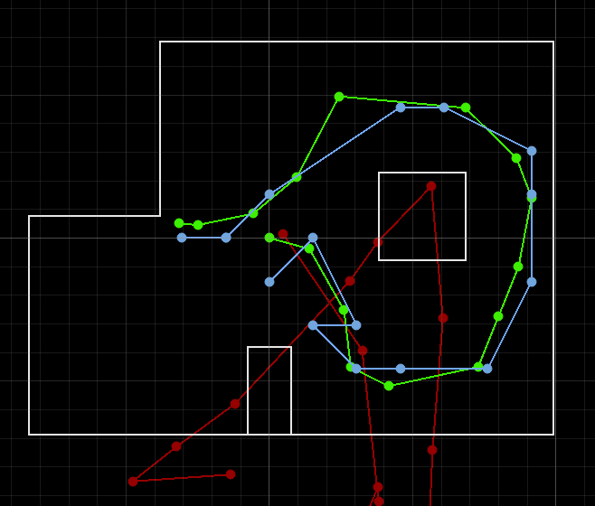
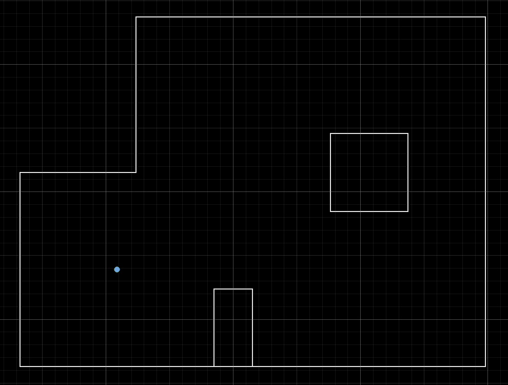
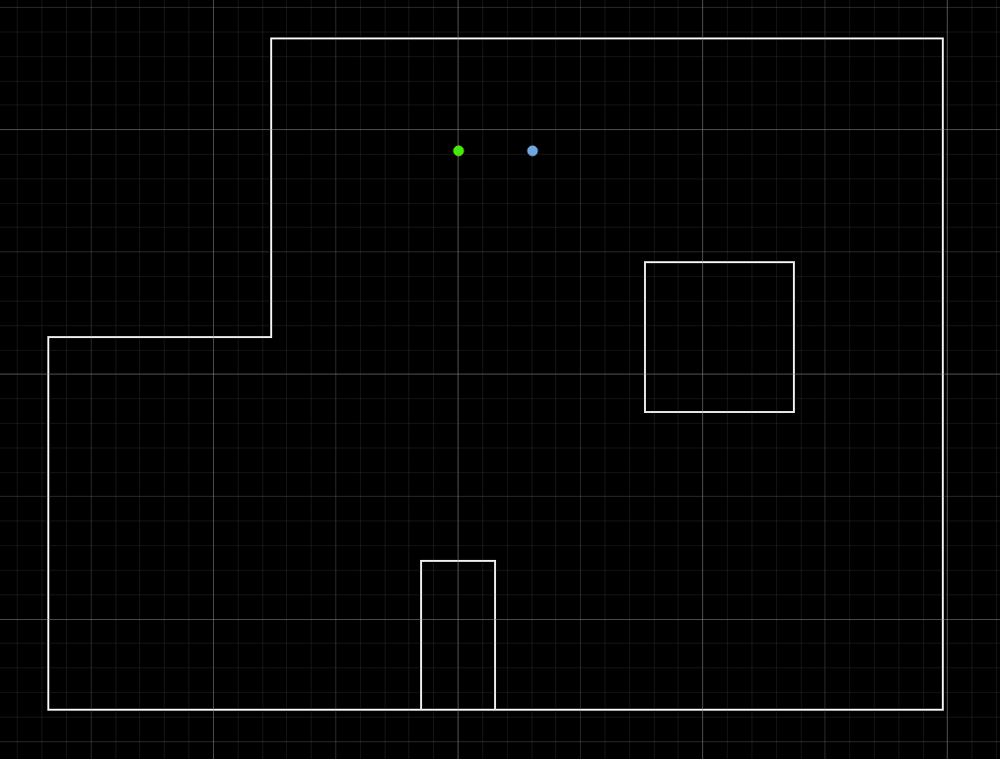
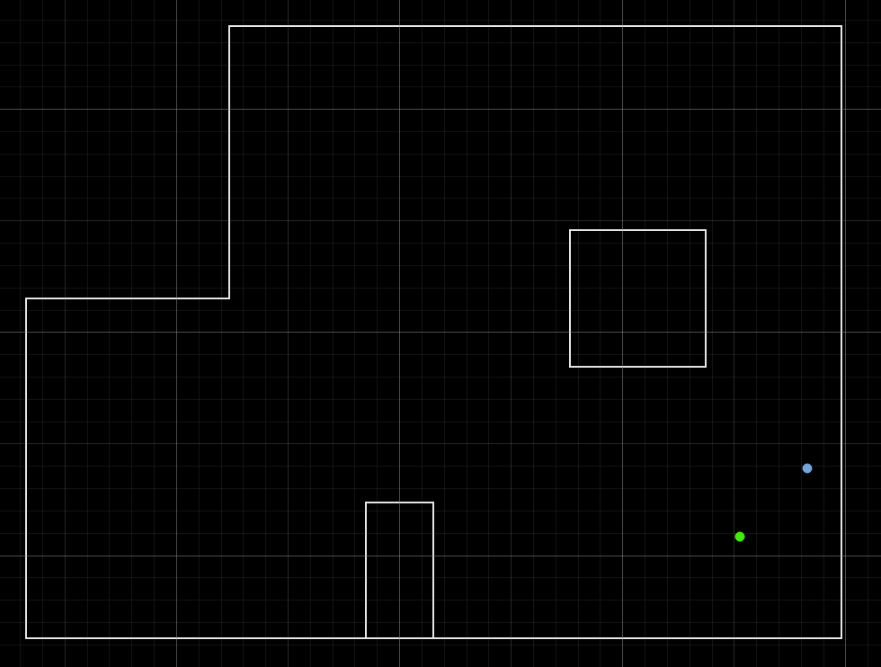
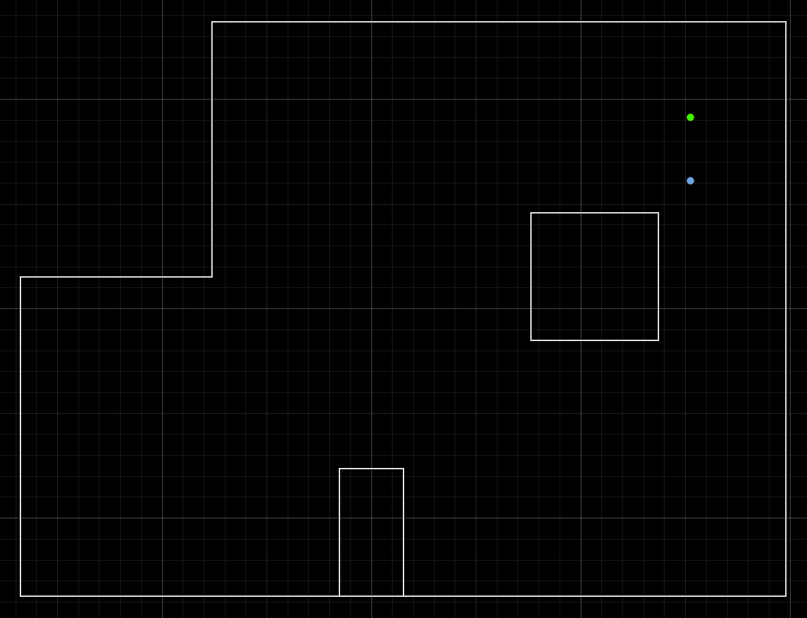

The goal of this lab was to use a 360 degree ToF scan and the Bayes filter update step to localize the real robot at four known poses.
Before running the real robot, I first ran lab11_sim.ipynb to check that the provided localization pipeline worked in simulation.

This gave me a baseline before using real robot data, and I expected more error from sensor noise and mismatch between the physical room and the map.
For the real robot part, I reused my Lab 9 mapping scan and connected it to the Bayes filter code from Lab 10. Since the robot motion is noisy and I did not have an external tracking system, I only used the update step starting from a uniform prior.
My robot spins in place and collects 18 ToF readings, one every 20 degrees. These readings are sent back to Python over BLE using the same MAP|... format I used in Lab 9. In perform_observation_loop(), I receive the logged scan rows, sort them by step index, convert the ToF distances from millimeters to meters, and return the ranges and bearings in the format the localization code expects.
The localization code expects the scan to be ordered counter-clockwise with bearings from 0 to 340 degrees. I also manually selected the ground-truth pose before each run, so the green point in the plot matched where I physically placed the robot. Below is the simplfied code:
def perform_observation_loop(self, rot_vel=120):
expected_count = int(self.config_params["mapper"]["observations_count"])
expected_bearings = np.arange(expected_count) * (360.0 / expected_count)
max_range_m = float(self.config_params["sensor_range"])
scan_rows = []
scan_done = False
def rx_handler(_, data):
nonlocal scan_done
msg = bytes(data).decode("utf-8", errors="ignore").strip()
if msg.startswith("MAP|"):
parts = msg.split("|")
scan_rows.append({
"step_idx": int(float(parts[2])),
"target_deg": float(parts[3]),
"yaw_deg": float(parts[4]),
"dist_mm": float(parts[5]),
})
elif msg == "MAP_DONE":
scan_done = True
self.ble.start_notify(self.ble.uuid["RX_STRING"], rx_handler)
self.ble.send_command(CMD.START_TOF, "")
self.ble.send_command(CMD.ENABLE_MOTORS, "")
self.ble.send_command(CMD.SET_PID_GAINS, "0.018|0|0.0")
self.ble.send_command(CMD.START_CONTROL, "")
self.ble.send_command(CMD.DUMP_LOG, "")
rows_by_step = {}
for row in scan_rows:
rows_by_step[row["step_idx"]] = row
rows = [rows_by_step[i] for i in sorted(rows_by_step.keys())]
sensor_ranges = np.array([row["dist_mm"] * 1e-3 for row in rows])
sensor_ranges = np.clip(sensor_ranges, 0.0, max_range_m)
sensor_bearings = expected_bearings[:len(sensor_ranges)]
self.ble.send_command(CMD.STOP, "")
self.ble.stop_notify(self.ble.uuid["RX_STRING"])
return sensor_ranges[:, np.newaxis], sensor_bearings[:, np.newaxis]This function is the main part that connects my real robot to the localization code. The return line is important because the Bayes filter expects both the range readings and the bearing angles as NumPy column arrays.
The four test poses from the lab TOF measurments are given in mm but the localization map uses meters, so I converted them.
(-3, -2)

At this pose, the estimated result was (-0.914, -0.610, 10°), which matches the ground truth almost exactly. This was the most accurate case, with only a small heading error.
(0, 3)

At this pose, the estimate was (0.305, 0.914, -10°). The y position matched well, but the x position was off by about one grid cell, resulting in a position error of about 0.305 m.
(5, -3)

At this pose, the estimate was (1.829, -0.610, 30°), which was the least accurate result. The estimate was off by about one grid cell in both x and y, giving a total position error of about 0.431 m. I think it’s because nearby grid cells in this region produce similar scan patterns, making it harder for the filter to distinguish between them.
(5,3)

At this pose, the estimate was (1.524, 0.610, -10°). The x position matched the ground truth, but the y position was off by about one grid cell, resulting in a position error of about 0.305 m.
Overall, the robot localized to the correct region of the map in all four cases. The best result was nearly exact, while the other cases showed errors at the level of one grid cell, with the largest error occurring when the estimate was off by one cell in both x and y. Compared to simulation, the real robot results show larger errors due to sensor noise and mismatch between the physical environment and the map.